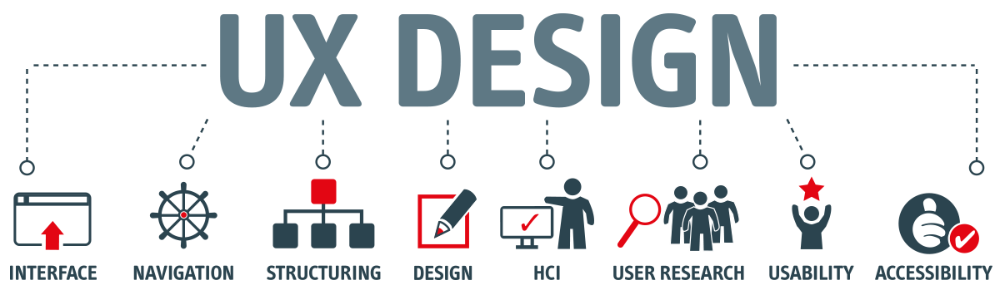

UX - User Experience
Hva er UX design?
HCI + UI = UX

User Experience, også kjent som brukeropplevelse på norsk, handler om prosessen rundt å utvikle systemer som både er brukervennlige og engasjerende.
UX er et bredt emne. Det har et litt mer helhetligh fokus enn HCI, og handler I praksis om å skape gode, attraktive og brukervennlige nettsteder. I et digitalt miljø er UX en kritisk faktor for suksess.
"The Basics of UX-design"
Hovedelementer i User Experience innebærer:
Interaksjonsdesign | Informasjonsarkitektur | | Visuelt Design | Usability og universell utforming |
UX er et stort tema, men enkelt sagt handler det om brukerns opplevelse rundt et produkts; design (look), interaksjon (feel), og brukervennlighet (usability).
- Lærbarhet: Hvor fort kan en ny bruker lære hva de trenger å vite for å finne informasjonen, servicen eller produkter de trenger fra siden?
Hvis bruker ikke enkelt finner informasjonen de leter etter, går de til et annet sted som gir dem det de trenger. - Enkel orientering: Kan brukere selvsikkert og korrekt dømme hvor de er på nettsiden?
- Effektivitet: Hvor fort kan brukere surfe, søke og bruke andre interaksjoner for å fullføre oppgavene sine på nettsiden. De fleste brukere vil ikke være interessert i å lese en lang blokk med tekst, så sørg for at innhold er enkelt å skanne og får poenget tydelig frem.
- Minneverdighet: Kan en bruker som ikke har vært på siden på en god stund raskt reetablere seg på nytt?
- Tilgjengelighet: Kan brukere med sensoriske eller fysiske utfordringer effektivt bruke sidens innhold og tjenester?
- Feiltilgivelse: Er programmet tilgivende av vanlige feiltakelser, og hvor ofte gjør brukere feil?
- Glede: Er det gledelig for brukere å bruke siden, eller føles det mer ut som et ork?
God UX kan deles opp i 7 Kjerneegenskaper:
.png)
Figur 1.1: 'Honeycomb' diagram som viser de 7 kjerneegenskapene til UX
Hvorfor er UX viktig?
Brukeropplevelse spiller en avgjørende rolle i å tiltrekke kunder, og at kundene kommer tilbake igjen, sprer positive omtaler, og dermed genererer flere kunder.
UX assosieres ofte med ord som selvforklarende, forståelig og intuitiv.
Brukere
Viktige Spørsmål man bør stille seg når man designer UX
- Hvem er brukerne?
- Hvilke problemer kan oppstå?
- Hvordan løser vi dem uten å skape nye problemer?
- Hva er egentlig en bruker mottakelige for å forstå?
Testing med representerende grupper er viktig, og her sies det at det er bedre med 3 ganger for mye enn 1 gang for lite. Det er de faktiske brukerne som skal bruke produktet som best kan si hva som blir godt UX design.
 Hvordan skal man lage et bra nettsted som effektivt retter seg mot de viktigste kundene, hvis man ikke kjenner til vanene og interessene deres?
Hvordan skal man lage et bra nettsted som effektivt retter seg mot de viktigste kundene, hvis man ikke kjenner til vanene og interessene deres?

Interaksjonsdesign (IxD)
Designet av interaksjonen mellom brukeren og produkt
Interaksjonsdesign har fokus på samspillet mellom menneske og maskin og handler om hvordan ting skal være for å gi optimal brukeropplevelse
- 1D Ord: Ord skal være enkel og meningsfull, og særlig ord som er knyttet til en interaksjon som feks. knapper.
- 2D Visuell representasjon: Bilder, typografi og ikon er viktige. Design som har forskjellige visuelle elementer gir en mer behagelig, beroligende brukeropplevelse, og hjelper brukere med å holde fokus.
- 3D Fysiske objekter & omgivelser: Fysiske objekter som mus, touchpad, touch-skjerm, og brukernes omgivelser (kontor, bussen, senga osv)
- 4D Tid: Handler om bruk av animasjon, video og lyd.
- 5D Oppførsel:"Hvordan utfører brukere handlinger på nettstedet?" og “Hvordan brukes produktet?”.
5 dimensjoner av Interaksjonsdesign God modell for å forstå hva IxD innebærer:
Informasjonsarkitektur
Informasjonsarkitektur, eller IA, handler om å organisere informasjon til taksonomier og hierarkier som henger sammen
Med IA lager man konsepter for hvordan en side skal organiseres, og hvordan oppbyggingen av navigasjonsstrukturen skal være.
Man setter opp standarer for koding, og har også ansvar for SEO-strategier.
Les mer om Design ThinkingKonseptdiagram/ modell
konseptdiagram viser hvordan hendelser henger sammen og påvirker hverandre.
Under er det en konseptmodell av et læringssystem.
Læringssystemet har fire prosesser: Student (learner action). Kurs (learning opportunity). Vurdering (assessment process) og Vitnemål (awarding process)
Et slikt diagram kan bidra til å gi en bedre forståelse for hvordan emneplanene, studieinfo osv bør linkes på nettstedet.
Kilder:
- Web Style Guide bok: Patrick J. Lynch, og Sarah Horton. Web Style Guide. Fourth edition. Yale university press, 2016.
- adera: Hva er UX design
- Informasjonsarkitektur: http://blogs.cetis.org.uk/asimong/category/learning-opportunities/